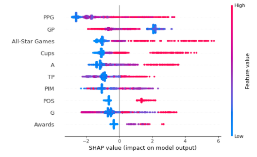

Overview
Data
To aquire our data, we scraped five different websites to gather career scoring statistics, all-star game appearances, season awards won, Stanley Cup victories and current players in the hall of fame. Data cleanup included spliting combined columns, converting position and Hall of Fame to integer values, combining individual awards totals into a sum column, remove duplicate and unnecesary columns. We then had to match the player names across all data sheets. This incuded spelling differences, removing special characters, adding Jr. to a few father and son pairs and researching a some player nicknames. There were aproximately 100 mismatches that we needed to address in our code in order to be able to join the data together on player name to create our final dataset to run through our machine learning model.
- https://www.eliteprospects.com/league/nhl/stats/all-time
- https://www.nhl.com/info/nhl-awards-trophies/
- https://records.nhl.com/records/playoff-skater-records/stanley-cups/skater-most-stanley-cups-won-career
- https://www.quanthockey.com/nhl-all-star-game/en/records/nhl-all-star-game-players-all-time-points-leaders.html
- https://en.wikipedia.org/wiki/List_of_members_of_the_Hockey_Hall_of_Fame
Machine Learning
This dataset was challenging to work with because it was imbalanced. There have been very few players inducted into the Hockey Hall of Fame compared to the number of total players. After running a few tests, we decided to limit our train-test scope to only players with a minimum 100 games played and players with their first season >= 1967. 1967 was the year the NHL first expanded from the original 6 teams to 12 teams. We tested 3 different classification models: Logistic Regression, Random Forest, and XG Boost. The Random Forest and XGBoost models were the most accurate, but far from great. The sampling of the dataset was an issue. All it had to do was predict 'No' and it was correct 99% of the time. Only 2.5% of the players are in the Hall of Fame. In order to address the imbalance, we decided to use RandomizedSearchCV from the Scikit-learn package. The updated model produced more realistic results.
Findings
After training, we decided to run all of the data for players back through
the model to check the output for players who were already in the Hall of Fame, the players that were overlooked, and players
that were not eligible but should be in the Hall. The model provided HoF probabilities less than 68% for 10 current HoF inductees.
Since the HoF selection committee focuses on more than stats, we concluded that there are factors not captured by our model
(College career, coaching career, Olympic career etc.)
Dataset Class Split
Boost Model Feature Impact
Boost Model Feature Summary
Shapley Force - Jaromir Jagr

- The output value is the prediction for that observation (the prediction for this observation is 10.56).
- The base value: The original paper explains that the base value E(y_hat) is “the value that would be predicted if we did not know any features for the current output.” In other words, it is the mean prediction, or mean(yhat). You may wonder why it is -4.187. This is because the mean prediction of Y_test is -4.187. You can test it out by Y_test.mean() which produces -4.187.
- Red/blue: Features that push the prediction higher (to the right) are shown in red, and those pushing the prediction lower are in blue.
- The plot is centered on the x-axis at explainer.expected_value. All SHAP values are relative to the model's expected value like a linear model's effects are relative to the intercept.
- Source: https://towardsdatascience.com/explain-any-models-with-the-shap-values-use-the-kernelexplainer-79de9464897a
[Bottom 10 inductees image]
Future Considerations
- Expand data set to include other leagues, Olympics/World Cup and playoff stats
- Include goaltenders and the ability to predict by any position
- Ability to click a table header to filter the table by that field.
- Ability to search by a team to see all of their players.
- Add interactive shapley value visuals.
- Ability to trend current players to predict HoF probability at end of their career.